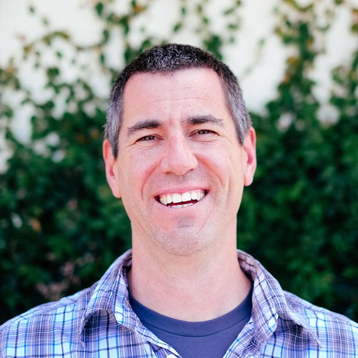
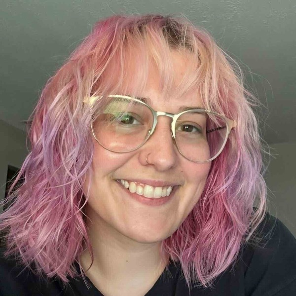
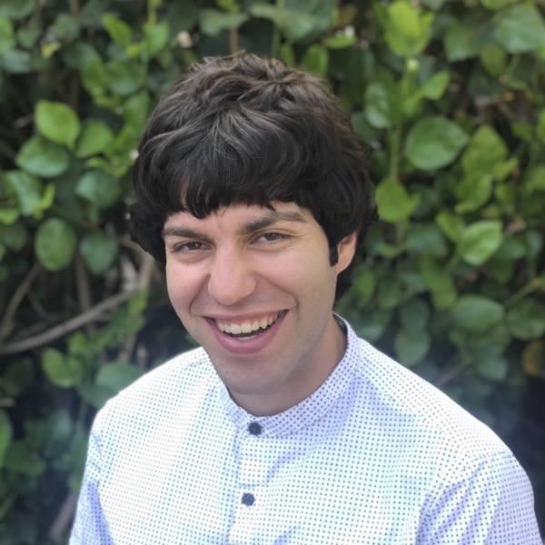
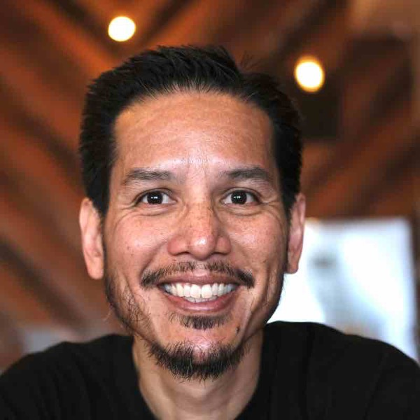
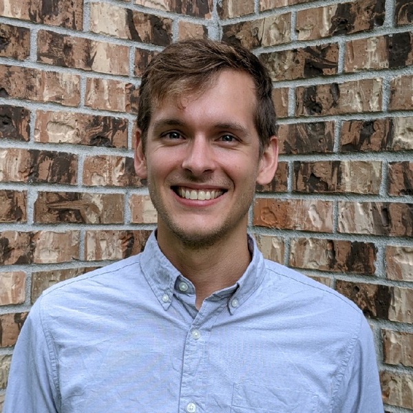
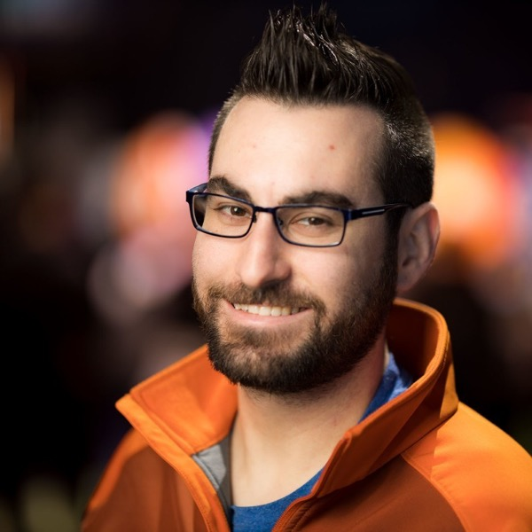
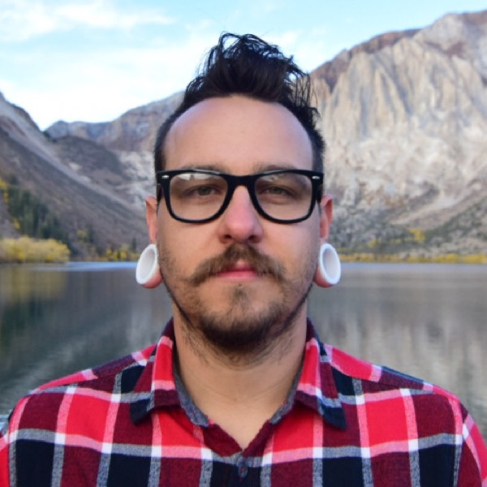
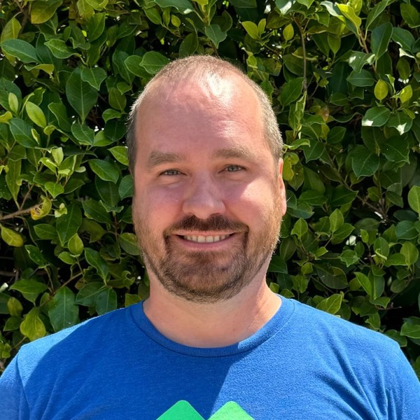
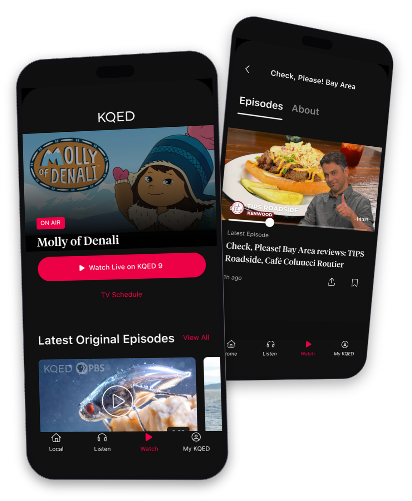
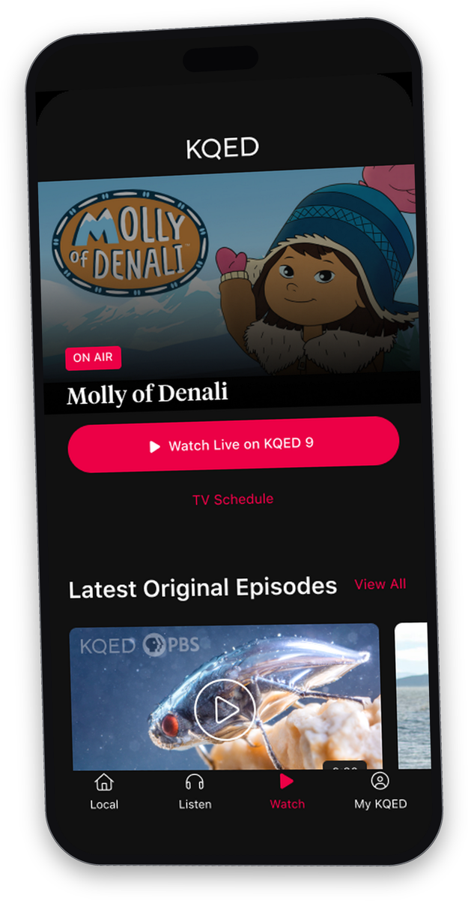

Request for Proposal Response
NPR Next-Generation
Mobile Platform
Option 3 · Track B: Native Mobile Engineering & Technical Delivery

MN






And the rest of the studio behind them.
Names and roles only. Do not spend time on agenda-setting in a fifteen minute slot. One sentence: "Adam on who we are, Claude on the build, Matt on the product, then back to me for timeline and cost."
Executive Summary
At Uptech Studio, we’re all about execution.
- That is why we are bidding Track B only, and not the blue-sky discovery half of the project.
- At KQED, Metalab led discovery and directional design. We took it into production and have carried it since.
- The same shape as your Track A and Track B split, with the same team that would be on NPR.
Uptech Studio

The whole pitch in three lines. Land it and resist elaborating.
The headline says what you are for; the bullets prove it and turn it into the bid. Every firm claims they work well with other agencies. Almost none have inherited another agency's design direction and shipped it to production. If you only get one sentence in this whole pitch, it is the second bullet.
Do not mention the faces. They are texture, not a roster, and they do the work silently: a studio with a real bench behind three partners on a video call. The named delivery team comes two slides later.
Company Overview
Ten years building apps. Several of them with KQED.
Uptech Studio
 JH
JH MF
MF CS
CS SM
SM BL
BLThe rating jump is your strongest number. Say it out loud rather than letting it sit on the slide: 2.0 is a failing app, 4.8 is a beloved one.
Then name the faces and stop. These are the people who built that app and the same people who would build NPR's, which is the claim you just made on slide 2. Do not walk the row introducing each person, that eats forty seconds. One sentence: "this is the KQED team, and it is the NPR team."
If asked about Flutter: KQED chose it for a small team holding parity across two platforms on a tight budget. NPR's requirements point the other way, and we are bidding native. Same team, different right answer.
Technical Requirements
Native Swift and Kotlin, on your MVVM architecture.
Uptech Studio
Your longest slot and the one an engineer is judging. Lead with native Swift and Kotlin on their existing MVVM, which answers the cross-platform exclusion before anyone asks.
Then the point the picture exists for: NPR owns encoding, storage, CDN, and DRM. Our scope is client-side integration and API consumption. That is their own language from the FAQ.
How We Work
Two agencies, one design system.
Nothing passes directly between the two agencies. NPR holds the final call, and ties break on the audience segment the feature serves.
Development
Process
Uptech Studio
Three beats, twenty seconds each. The design partner owns the library, we own the native implementation, and we join feasibility reviews during discovery so platform constraints surface before something gets designed around them.
Then the closer people remember: when design and engineering disagree, the tie-breaker is not seniority or taste. We frame it against the audience segment the feature serves, using NPR's research, and NPR decides.
The two columns are the answer to "what is it actually like to work with you." Repos in your organization is the one to say out loud, because it means there is no moment where you have to ask for the code back. Everything else on that list is a cadence they already run, so name it and move.
Feature Requirements
Every one of these is running in production today.
Uptech Studio

Do not read the grid. Pick two, tell those stories, let the rest sit there as evidence.
Worth picking: daily games, because Foggy Find generates puzzles from the day's articles through an AI pipeline and links solved words back to the source story with no added editorial burden. That is a 5x weekly active users argument, not a feature. Second choice is Android Automotive OS for Radio Paradise, since almost nobody has shipped a native AAOS app.
Leave geolocated broadcast alone here. It leads the next slide, and the screenshot beside you is that same Watch tab, so do not narrate it twice.
Local and National
Local is the hard part. We already ship it.
- We serve the PBS local broadcast by listener location, in production at KQED today. That is your station affiliation problem, already solved for a joint licensee.
- Station branding and call letters flow through the Organization Service, so a station's identity changes without an app release.
- Support routes to the listener's own Member station, so giving reinforces the local relationship rather than competing with it.
WCAG 2.1 AA, your app store accounts, your repositories, and no access to user PII. Detail is in the written response.
Uptech Studio
This replaces the non-functional requirements slide. That one was hygiene: true, necessary in writing, and worth nothing in a pitch. This one answers the hardest problem in their brief.
Local-national across 240+ Member stations is fifteen percent of the written scoring and the thinnest part of the response. It is also the one place you have a shipped, verifiable answer nobody else will have.
The grey line at the bottom covers the non-functional items in ten seconds. Read it fast, flatly, and move. It is there so nothing is missing, not to be discussed.
Timeline & Pricing
$600,000. Beta in January, V1 in September.
- 13 milestone payments, invoiced Net 30, each tied to an accepted deliverable rather than elapsed time.
- No support contract required at handover. Documentation, runbooks, and repos in your organization.
Uptech Studio
Say the number early and without hedging. Then the two lines their RFP asks for explicitly: milestone-based rather than time-and-materials, which they say they strongly prefer, and maintainable without a retainer, which they require in writing.
The second is worth an extra beat. Every bidder promises it; you can say you have been through the handoff, because the KQED design system outlived the agency that built it.
Thank you
Public radio matters
to a lot of us here.
matt@uptechstudio.com · uptechstudio.com
One sentence, then stop talking and take questions. Say explicitly that the written response covers what you skipped: it invites questions and signals you are not going to fill the remaining time.